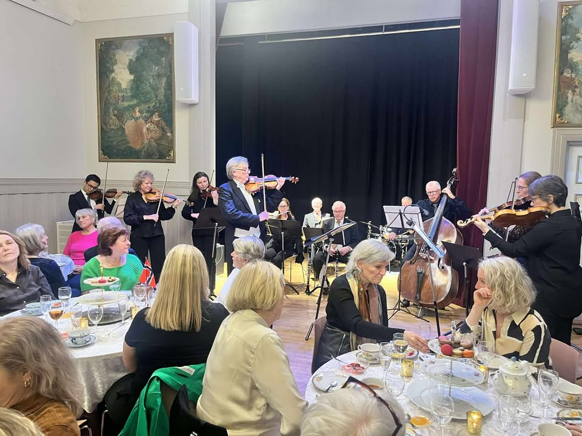

Neste konsert
Sommerkonsert med solister fra Asker kulturskole
Søndag 7. juni kl. 19.00 · Østenstad kirke
Program og medvirkende
Konserten støttes av Asker kommune, NASOL og Sparebankstiftelsen DNB.

Stiftet i 1972 · Asker
Kommunens symfoniorkester for unge og voksne amatørmusikere.
Neste konsert
Søndag 7. juni kl. 19.00 · Østenstad kirke
Konserten støttes av Asker kommune, NASOL og Sparebankstiftelsen DNB.

Konsertoversikt

Dirigent: Tanja Karita Ikonen · Solist: Ida Kamilla Andersen, fiolin · Program: Tsjaikovskij Symfoni nr. 5 og Bruch Fiolinkonsert.

Asker symfoniorkesters salongorkester spiller stemningsfull musikk i klassisk café-atmosfære.
Dirigent: Guro Anstensen Haugli · Solister: Øystein Skre og Marit Sehl.
Om
Asker symfoniorkester er et aktivt amatørorkester med rundt 35 faste musikere i alderen 17–84 år.
Orkesteret ble stiftet i 1972 og holder rundt fem konserter i året, med klassisk repertoar og samarbeid med solister og lokale kulturaktører.
Utforsk repertoar
For medlemmer
Vi ønsker flere gode amatørmusikere velkommen. Vi øver hver tirsdag på Borgen ungdomsskole kl. 19.00–21.45.
Ta kontakt hvis du vil besøke en øvelse eller høre mer om medlemskap.
Kontakt ossRepertoar
Programmet favner både symfoniske verk, solistkonserter og salongorkestertradisjon. Se konsertoversikten og følg kommende programmer.
Se konsertprogram